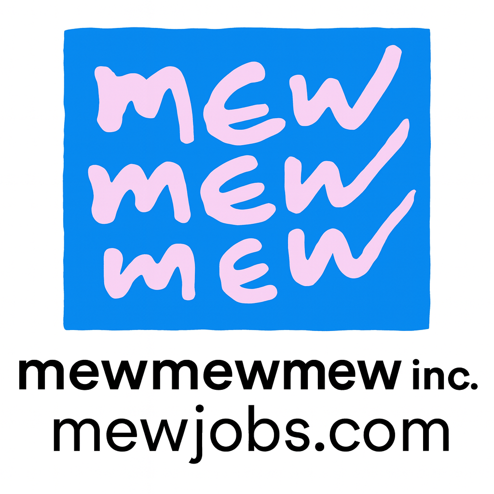
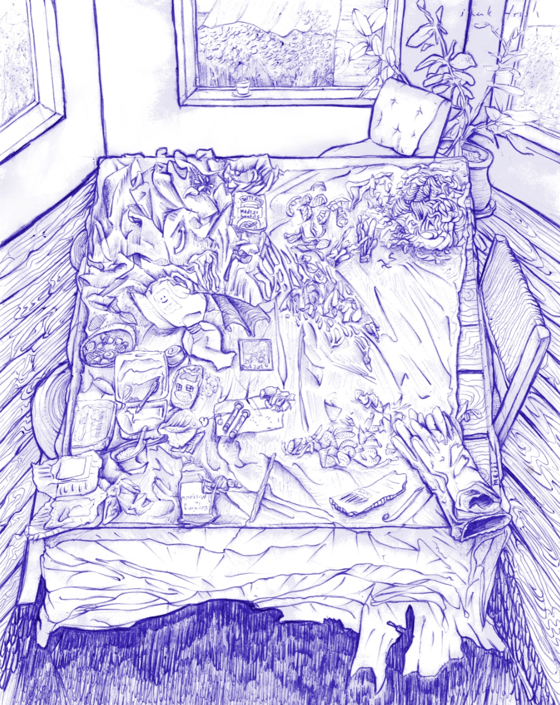
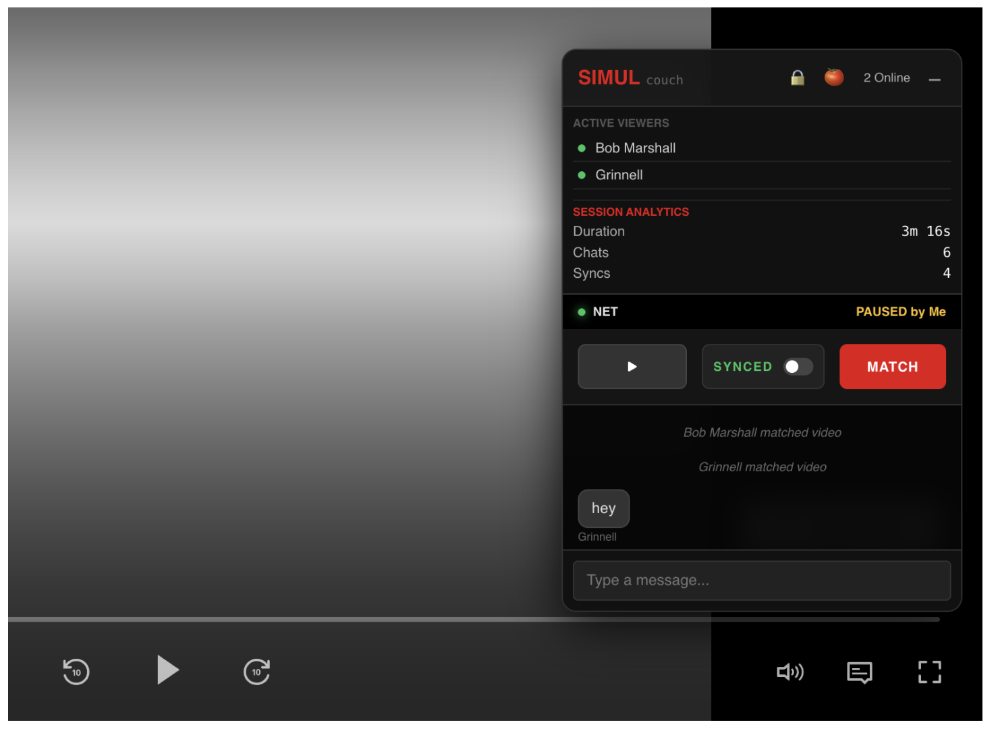
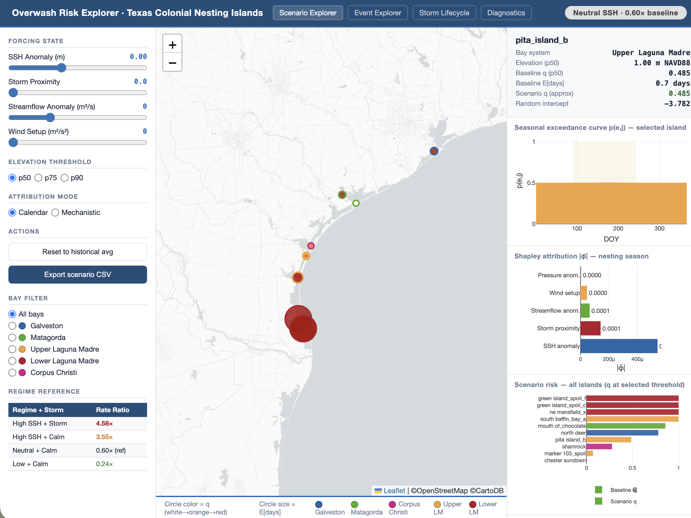

Current Ventures

CalleEcology Inc.
Coastal ecology, computed. Ecological research, scientific software, and technical reporting — from open-source inundation modeling to peer-reviewed writing and study design.
Visit Site
mewmewmew Inc.
AI-powered workforce marketplace connecting organizations with specialized scientific and environmental consultants, featuring automated project matching, compliance validation, and enterprise workforce analytics for data-driven hiring decisions.
Visit Platform
Creative Portfolio
My art studio, where I specialize in blue pen drawings and custom murals that invite people to see the world from new perspectives—creating original works, prints, and wall art that challenge perception and foster human connection through accessible, transformative art.
View Gallery
simul.watch
A privacy-first, frame-perfect video sync engine for watching together across Netflix, Disney+, YouTube, and more — built on client-side AES-GCM encryption and a zero-persistence architecture.
Visit Site GitHub
Overwash Risk Dashboard
Interactive dashboard for coastal overwash risk on Texas waterbird nesting islands — GAM/Shapley analytics, storm-event decomposition, and sea-level-rise scenarios.
Launch Dashboard